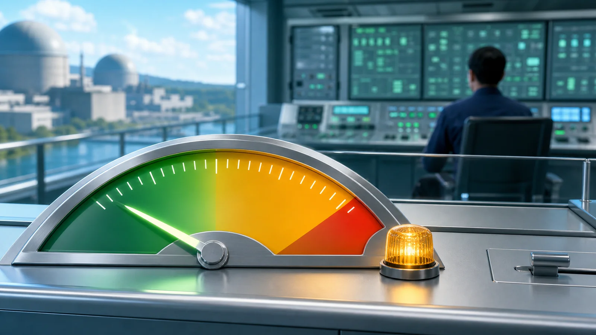
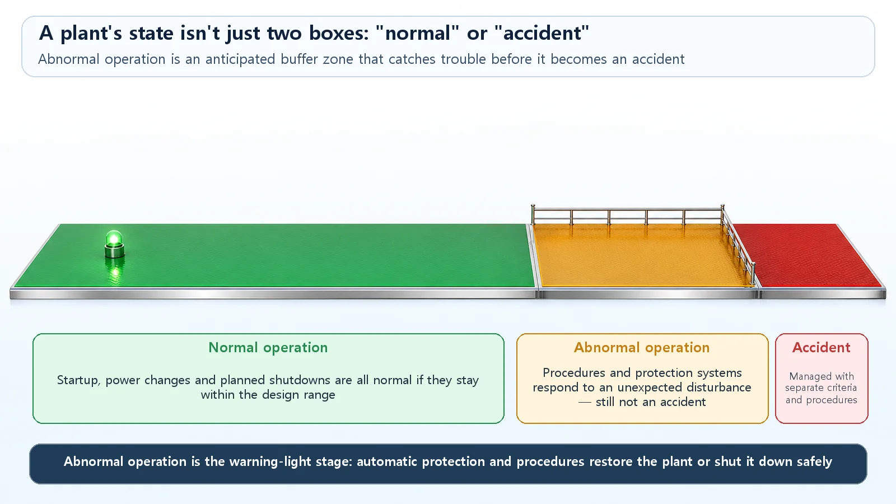
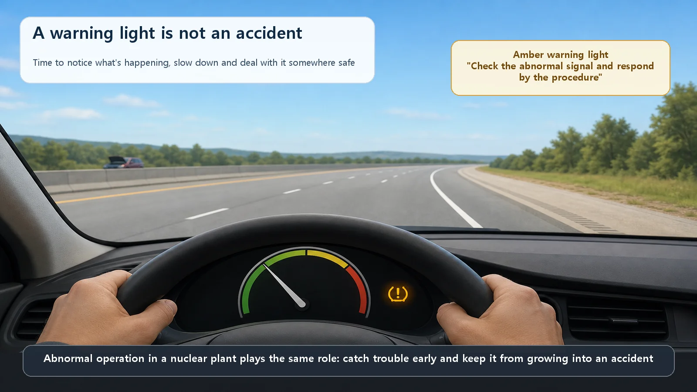

Reactor Types & Plant Systems · 199
A Warning Light Isn't a Crash — Normal Operation and Abnormal Operation in a Nuclear Plant
Like an amber dashboard light, abnormal operation is an anticipated, prepared-for stage that catches trouble before it can grow into an accident.

Normal operation is every state in which a nuclear plant runs as planned within its design range, including startups, power changes and planned shutdowns. Abnormal operation is a departure from that range caused by an unexpected failure or disturbance, but it is not an accident. Such events are anticipated in design, and international safety standards still count them as operational states: a buffer zone, with its own procedures and automatic protection, that keeps trouble from growing into an accident.
You're cruising down the highway when an amber warning light suddenly blinks on the dashboard: tire pressure a bit low, or "check engine." Your heart skips a beat, but the car isn't broken and there hasn't been a crash. You switch on the hazard lights, ease off the speed, pull onto a safe shoulder, and usually it all gets sorted out.
Nuclear power plants have exactly this kind of "warning light on" state too. Many people assume it means an "accident," but that's a different story altogether. Today let's unpack the two terms that sort out what state a plant is running in: normal operation and abnormal operation.
First, "normal operation" doesn't mean standing still
"Normal operation" can sound like everything is frozen and nothing changes. That's a misconception. Normal operation means every state in which the plant runs as planned, within its predetermined design range. The key is "as planned, within set limits," not "stationary."
So normal operation covers more than you might expect: startup, gradually bringing the reactor up and raising power; power operation, steadily making electricity at rated power; load following, lowering power at night when demand is low and raising it again by day; and planned shutdown, calmly stopping the reactor in sequence for maintenance. In a car, stopping at lights and accelerating onto the highway are all "normal driving." Just as changing speed isn't abnormal, power changing according to plan is still normal operation.
When something unexpected happens: abnormal operation
Now the warning light comes on. Something unexpected can happen to a smoothly running plant: the electricity coming in from outside is cut off, the turbine sending power out suddenly stops, or one of the water supply systems acts up. When an unexpected failure or outside disturbance pushes the plant's condition outside its normal range, that is abnormal operation.
The single most important point: abnormal operation is not an accident. The plant has left its normal range, but nothing has been broken or become dangerous yet. A signal has simply lit up saying "something's off."
Here's the more interesting part. Nuclear engineers call these abnormal events anticipated operational occurrences, literally events that are "expected to happen." Over decades of operation, it's entirely possible that outside power will be lost once or a component will fail, so plants are designed assuming this from the start, with generous margins so that even when it happens the fuel isn't damaged and nothing becomes dangerous. Remarkably, international safety standards still classify these anticipated operational occurrences, abnormal operation, as one of the operational states. They sit in a completely different box from accidents. (How exactly the term "abnormal operation" used in South Korea maps onto the IAEA's "anticipated operational occurrence," and the official wording in regulatory documents, is described here only at the widely used concept level.)

Normal, abnormal, accident: a buffer zone in between
So a plant's state isn't split into just two boxes, "normal or accident." It's more like a band of several stages, like the scale on a thermometer. Normal operation, which is everyday, takes up a wide stretch at one end; next to it sits abnormal operation, which can happen now and then; and accidents, which are very rare, sit apart at the far end.
| Stage | Character | How often | Usual response |
|---|---|---|---|
| Normal operation | Within the design range, planned operation | All the time | Normal operating procedures |
| Abnormal operation (anticipated operational occurrence) | Outside the normal range, not an accident | Expected at least once over the plant's life | Abnormal operating procedures + automatic safety functions |
| Accident (design basis accidents etc.) | More serious consequences | Rare | Emergency operating procedures + safety systems |
This picture reveals abnormal operation's real role: it is a buffer zone between normal and accident, a stretch that catches the plant when something goes off track so it doesn't roll straight into an accident. Just as pulling onto the shoulder to check things keeps a warning light from turning into something bigger, the plant's automatic safety devices act and operators respond at this stage, returning it to normal or shutting it down safely.

This buffer zone also gives a glimpse of the idea underlying nuclear safety: blocking in layers. If the plant departs from normal operation, it's caught at the abnormal-operation stage; and if it ever goes beyond that, the next line of defense backs it up. If one layer is breached, there's another behind it. (The exact mapping of normal/abnormal/accident stages onto each level of defense in depth differs between documents, so it isn't spelled out here.)
A response manual for every state
There's a very practical reason for dividing states like this: to decide in advance what to do in each one.
Normal operation has normal operating procedures that set out the order for startup, power operation and shutdown. Abnormal operation has abnormal operating procedures covering what to check when a particular alarm sounds or a warning sign appears, and how to respond to return to normal or stop safely. And there are separate emergency operating procedures for more serious accident situations.
This is also where automatic systems and people split the work. Protective actions that must happen very fast, such as the signal that shuts the reactor down in an instant, are carried out by automatic safety systems before any person could react. Operators, meanwhile, watch instruments and alarms, diagnose what state the plant is in and manage the situation by the procedures. Think of airbags firing on their own while a person still holds the wheel. Automation and people don't replace each other; they divide the roles.
Common points of confusion
Abnormal operation is not an accident. It is a state that was "expected and prepared for in advance," and under international standards it still counts as an operational state. Accidents are much rarer and are managed as a separate stage.
Normal operation doesn't mean shut down. Load following that moves power up and down as planned, and startups and shutdowns done in sequence, are all normal operation. Change alone isn't abnormal; leaving the planned range is.
Abnormal operation isn't necessarily caused by operator error. It can also come from causes that aren't anyone's fault, such as losing outside power or a single component failing. In fact, the heart of preparing for abnormal operation is admitting up front that "people will make mistakes and equipment will fail someday" and preparing for it.
Today's summary
- Normal operation is every state in which the plant runs as planned within its design range, including changes such as load following, startup and shutdown (normal operation ≠ standing still).
- Abnormal operation is a departure from the normal range due to an unexpected failure or disturbance, but it is not an accident; it is a buffer zone assumed and prepared for in advance, which is why it's called an "anticipated operational occurrence."
- A plant's state is a band running normal → abnormal → accident, and abnormal operation sits in between, catching trouble before it grows into an accident.
- Each state has procedures prepared in advance; fast protective actions belong to automatic safety systems, diagnosis and management to operators.
- So a warning light at a plant doesn't automatically mean an accident, and that is exactly why the three states are kept apart.